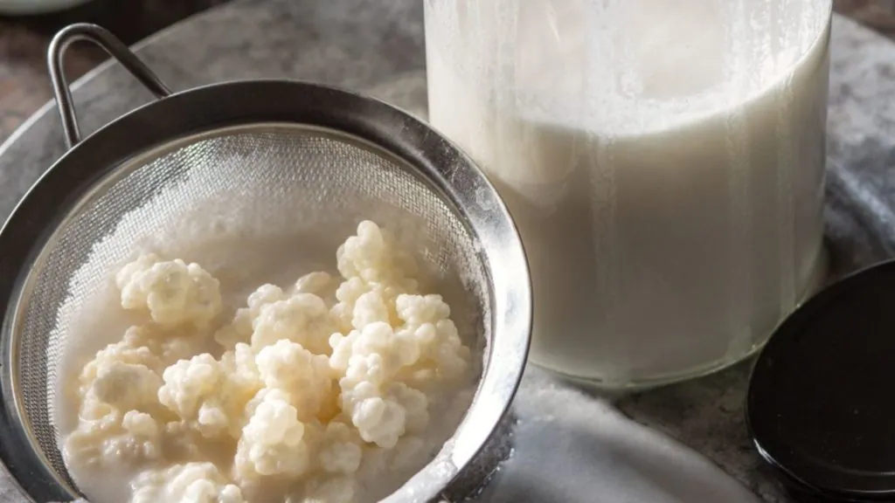

Élixirs naturels · 4 min de lecture
Élixir au Kéfir : le rituel fermenté vivant pour régénérer l’intestin, renforcer l’immunité et revitaliser le corps

Introduction
La santé commence dans l’intestin.
Ce n’est pas une tendance, c’est une réalité biologique. Depuis des siècles, les peuples traditionnels consomment des aliments fermentés pour soutenir la digestion, renforcer l’immunité et maintenir une vitalité durable. Parmi eux, le kéfir occupe une place centrale.
Boisson vivante, riche en micro-organismes bénéfiques, le kéfir est bien plus qu’un simple probiotique : c’est un écosystème naturel au service de l’équilibre intestinal et de la santé globale.
Dans cet article, je te présente un élixir naturel à base de kéfir, associé à des ingrédients soigneusement choisis afin de créer une alchimie optimale pour la santé digestive, immunitaire et nerveuse, sans surcharge ni artificialité.
👉 Je tiens à vous rappeler une règle d’or que j’aime beaucoup et qui guide mes choix au quotidien : si la nature ne l’a pas créé, ne le buvez pas.
Le problème
De nombreuses personnes souffrent aujourd’hui de :
troubles digestifs récurrents,
ballonnements, fatigue après les repas,
immunité affaiblie,
inflammations chroniques silencieuses,
stress et fatigue nerveuse.
La cause profonde est souvent la même : un microbiote intestinal déséquilibré.
Antibiotiques, alimentation industrielle, stress chronique… tout cela fragilise la flore intestinale, qui joue pourtant un rôle clé dans l’immunité, l’énergie et même l’humeur.
La promesse
L’élixir au kéfir agit comme un rééquilibrant intestinal vivant.
Il nourrit la flore, soutient la digestion, renforce les défenses naturelles et améliore la vitalité générale, tout en douceur et en profondeur.
Ce n’est pas un correctif temporaire.
C’est un retour à l’intelligence du vivant.
Les bénéfices
Une digestion plus fluide et confortable
Un microbiote intestinal renforcé
Une meilleure immunité naturelle
Une énergie plus stable
Un impact positif sur l’humeur et le mental
🌿 Pourquoi ce remède est efficace
Le kéfir est une boisson vivante et fermentée, contenant :
des probiotiques variés (bien plus que la plupart des compléments),
des enzymes digestives,
des vitamines du groupe B,
des acides organiques bénéfiques.
Contrairement aux probiotiques isolés, le kéfir agit comme un système complet, capable de :
restaurer l’équilibre intestinal,
améliorer l’assimilation des nutriments,
soutenir l’immunité intestinale (qui représente une grande partie de l’immunité globale).
Associé à des ingrédients comme le citron, les graines de chia et le gingembre doux, il devient encore plus fonctionnel et harmonieux pour l’organisme.
💪 Les bienfaits de l’élixir au kéfir
Rééquilibrage du microbiote intestinal
Favorise une flore plus diversifiée et résistante.Renforcement de l’immunité
Un intestin sain = un système immunitaire plus fort.Amélioration de la digestion
Moins de ballonnements, meilleure assimilation.Soutien du système nerveux
L’intestin et le cerveau sont intimement liés.Détox douce et naturelle
Les ferments aident à éliminer les déchets métaboliques.
🍋 La recette de l’Élixir Probiotique & Vitalité au Kéfir
Ingrédients (alchimie optimale)
250 ml de kéfir (de fruits ou de lait, selon ta tolérance)
Le jus d’½ citron frais
1 cuillère à café de graines de chia (trempées)
Une pincée de gingembre frais râpé
Quelques feuilles de menthe fraîche (optionnelles)
Pourquoi cette synergie fonctionne ?
Le kéfir rééquilibre et régénère l’intestin.
Le citron soutient la digestion et l’assimilation.
Les graines de chia nourrissent la flore et stabilisent l’énergie.
Le gingembre stimule en douceur le système digestif.
La menthe apaise et rafraîchit.
Préparation
Verse le kéfir dans un verre.
Ajoute le citron, les graines de chia et le gingembre.
Mélange délicatement.
Ajoute la menthe juste avant de boire.
Consomme frais, lentement.
⚠️ Ne pas mixer violemment pour préserver les ferments vivants.
⏰ Comment l’utiliser
À consommer 1 fois par jour, idéalement :
le matin à jeun,
ou en milieu de journée.
Peut être utilisé en cure de 2 à 4 semaines, ou intégré à une routine régulière.
Commence par de petites quantités si tu débutes.
👥 À qui s’adresse ce rituel
Aux personnes ayant une digestion sensible
À ceux qui veulent renforcer leur immunité naturellement
Aux personnes stressées ou fatiguées
À ceux qui ont pris des antibiotiques récemment
À toute personne souhaitant restaurer son équilibre intestinal
⚠️ Précautions
Commence progressivement pour éviter les réactions digestives.
Déconseillé en cas d’intolérance sévère aux ferments sans avis médical.
Utilise un kéfir maison ou de qualité artisanale, non pasteurisé.
Évite en cas d’immunodépression sévère sans avis médical.
🌱 Conclusion & appel à l’action
L’élixir au kéfir est un retour au vivant.
Il ne force pas le corps, il lui redonne les outils pour s’autoréguler.
Prendre soin de son intestin, c’est prendre soin de :
son énergie,
son immunité,
son mental.
👉 Si la nature ne l’a pas créé, ne le buvez pas.
Je partage régulièrement des élixirs, rituels et ressources bien-être pour t’aider à reconstruire une santé solide, durable et consciente.
📚 Je suis auteur bien-être sous le pseudo Chest0 JM.S., mes ouvrages sont disponibles sur Amazon.
🔗 Retrouve tout mon univers ici :
👉 https://chest0.fr
👉 Si tu veux aller plus loin, découvre aussi notre
« Travail assis : pauses actives »
👉 Créez votre planning de pauses gratuit : chest0.fr/outils/pauses-actives/
« Journal du sommeil »
👉 Tenez votre journal du sommeil sur 7 jours, gratuitement : chest0.fr/outils/journal-sommeil/
« Les 20 aliments des centenaires » et « Microbiote intestinal »
👉 Mes livres de recettes naturelles, élixirs et détox : chest0.fr/pages/livres.html
« 4 habitudes à observer au quotidien »
👉 Faites le point sur vos habitudes avec l'outil gratuit : chest0.fr/outils/equilibre-quotidien/
Plus de 40 recettes d'élixirs dans les livres Chest0.
Voir les livres